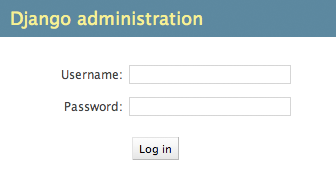

原文
本教程上接教程第1部分。我们将继续开发网页投票应用，并将注意力集中于Django自动生成的管理界面上。
理念
为你的员工或者客户生成用于添加、修改和删除内容的管理性站点是一件单调乏味、缺乏创造力的工作。 为此，Django会根据你写的模型文件完全自动地生成管理界面。
Django是在新闻编辑室这样的环境中被开发出来的，这样的环境中“内容发布者”站点和“公共”站点有着非常明显的界限。 网站管理者使用管理界面来添加新闻故事、新闻事件、体育成绩等，这些内容会被展示在公共站点上。Django解决了为网站管理者创建统一的管理界面用以编辑内容这个问题。
管理界面不是让访问网站的人使用的，它服务于网站管理者。 它用于网站的管理员。
首先，我们需要创建一个能够登录管理站点的用户。 运行如下命令：
$ python manage.py createsuperuser
键入你想要使用的用户名，然后按下回车键：
Username: admin
然后提示你输入想要使用的邮件地址：
Email address: admin@example.com
最后一步是输入你的密码。 你将被要求输入你的密码两次，第二次输入是为了确认第一次的输入。
Password: **********
Password (again): *********
Superuser created successfully.
Django的管理站点默认是启用的。 让我们启动开发服务器，然后探索它。
从教程1中我们了解到，你能通过使用如下命令来启动开发服务器：
$ python manage.py runserver
现在，打开一个浏览器访问你本地域名中的 “/admin/” —— 例如http://127.0.0.1:8000/admin/。你应该会看到管理站点的登录界面：
由于翻译功能是默认打开的，登录界面可能会显示出你自己的语言，这取决于你的浏览器的设定和Django是否具有这种语言的翻译。
和你看到的不一样？
如果在这里，你看到的不是上面的登录界面，而是一个带有类似如下内容的错误页面：
ImportError at /admin/
cannot import name patterns
...
你可能使用的是不符合本教程的Django版本。 你需要换一个老版本的教程或者换一个新版的Django。
现在，试着用你在上面创建的超级用户的账号来登录这个站点。 你应该会看到Django管理站点的首页面：
你将看到几类可编辑的内容：groups和users。 它们是由django.contrib.auth提供的，这个认证框架集成在Django中。
但我们的poll应用在哪儿？ 它没有显示在管理站点的首页面上。
只需要做一件事：我们需要告诉管理站点Question 对象要有一个管理界面。 要做这件事，需要打开polls/admin.py文件，把它编辑成这样：
from django.contrib import admin
from .models import Question
admin.site.register(Question)
现在，我们已经在管理站点中注册了Question对象，Django知道它应该被显示在管理站点的首页面上：
点击“Questions”。 现在，你会进入Question的“变更列表”。 这个界面显示了数据库中的所有question，你可以选择一个来更改它。 那里有我们在教程第1部分创建的“What’s up?” question:
单击“What’s up?”来编辑它：
注意事项：
界面的底部有几个按钮：
如果“Date published”的值和你在教程1中创建这个Question对象时的时间不相符，可能是因为你忘记将TIME_ZONE设置为正确的值。修改它，然后重新载入这个界面，检查一下正确的值是否出现。
通过“Today”和“Now”这两个快捷方式来更改“Date published”字段。 然后点击 “Save and continue editing”。然后点击右上角的“History”按钮。 你将看到一个页面，列出了通过Django管理界面对此对象所做的全部更改的清单，包含有时间戳和修改人的姓名等信息：
花几分钟感叹一下吧，你没写什么代码，却得到了这一切。 只需使用admin.site.register(Question)注册Question模型，Django就能构造一个默认的表单表示。通常，你会想要自定义管理界面中表单的外观和功能。 你可以通过在注册对象的时候告知Django一些你想要的选项来自完成。
让我们通过对编辑表单上的字段重新排序来看一下它是如何工作的。 将admin.site.register(Question)行替换成：
from django.contrib import admin
from .models import Question
class QuestionAdmin(admin.ModelAdmin):
fields = ['pub_date', 'question_text']
admin.site.register(Question, QuestionAdmin)
你将遵循这个模式 —— 创建一个管理模型的对象，然后将它作为admin.site.register()的第二个参数传入 —— 当你需要为一个对象修改管理选项的时候。
上面那特定的更改，使得“Publication date”字段排在“Question”字段前面：
仅有两个字段不会令你印象深刻，但是当管理有许多字段的表单时，选择一个直观的排序方式是一个重要而实用的细节。
说到有许多字段的表单，你可能想把表单分割成字段集：
from django.contrib import admin
from .models import Question
class QuestionAdmin(admin.ModelAdmin):
fieldsets = [
(None, {'fields': ['question_text']}),
('Date information', {'fields': ['pub_date']}),
]
admin.site.register(Question, QuestionAdmin)
fieldsets中每个元组的第一个元素是字段集的标题。以下是我们的对象表单现在的样子：
你可以任意地为每个字段集指定HTML样式类。
from django.contrib import admin
from .models import Question
class QuestionAdmin(admin.ModelAdmin):
fieldsets = [
(None, {'fields': ['question_text']}),
('Date information', {'fields': ['pub_date'], 'classes': ['collapse']}),
]
admin.site.register(Question, QuestionAdmin)
现在，Question管理界面看起来已经很好了，让我们再来稍微调整一下“变更列表”界面 —— 该界面显示系统中所有的Question。
下面是目前为止它的样子：
默认地，Django显示每个对象的str()返回的内容。但有时如果我们能显示每个字段将很有帮助。 我们使用list_display 选项来实现这个功能，它是一个要显示的字段名称的元组，在对象的变更列表页面上作为列显示：
class QuestionAdmin(admin.ModelAdmin):
# ...
list_display = ('question_text', 'pub_date')
为了更好地评估对象，让我们将教程1中自定义的方法was_published_recently 添加进来：
class QuestionAdmin(admin.ModelAdmin):
# ...
list_display = ('question_text', 'pub_date', 'was_published_recently')
现在，Question变更列表页面看起来就像如下所示：
你可以点击其中一列的头部来让列表按照这列的值来进行排序 —— 除了was_published_recently这列的头部，因为Django不支持按照随便一个方法的输出进行排序。另外注意， was_published_recently这列的头部默认是这个方法的名字（用空格取代下划线），并且这列的每一项内容都是用返回值的字符串形式表示。
你可以通过给这个方法（在polls/models.py中）添加一些属性来改进这些：
class Question(models.Model):
# ...
def was_published_recently(self):
return self.pub_date >= timezone.now() - datetime.timedelta(days=1)
was_published_recently.admin_order_field = 'pub_date'
was_published_recently.boolean = True
was_published_recently.short_description = 'Published recently?'
关于这些方法属性的更多信息，请参见 list_display。
再次编辑你的polls/admin.py文件来改进Question变更列表页面：使用list_filter来添加过滤器。将下面这行添加进QuestionAdmin：
list_filter = ['pub_date']
这行代码添加一个“Filter”侧边栏，可以使人们通过pub_date字段对变更列表进行过滤：
显示的过滤器的类型取决于你所使用的字段的类型。 因为pub_date是DateTimeField类型的，Django知道给出合适的选项：“Any date”、“Today”、“Past 7 days”、“This month”、“This year”。
进展得很顺利。让我们添加一些搜索功能：
search_fields = ['question_text']
这行代码在变更列表的顶部添加了一个搜索框。 当有人将搜索的内容输入搜索框，Django将在question_text字段中进行搜索。 你可以使用任意数量的字段 —— 但由于它在后台使用LIKE进行查询，限制搜索字段的数量在会使你的数据库查询更容易。
现在又是一个好时机来告诉你变更列表界面提供方便的分页功能。 默认每页显示100条。 Change list pagination、search boxes、filters、date-hierarchies和column-header-ordering 都将按照你设想的那样工作。
很明显，每个管理页面的顶部都有“Django administration”还蛮搞笑的。它仅仅起到了占位符的作用。
它可以用Django的模板系统轻松改变。 Django的管理站点是用Django自己制作出来的，它的界面代码使用的是Django自己的模板系统。
在你项目的文件夹内创建一个templates目录（包含 manage.py的目录）。模板可以放在Django能访问到的文件系统任何地方。 （运行你的服务器的用户即是运行Django的用户）。然而，将模板放在你的项目目录下是一个应该遵循的非常好的约定。
打开你的配置文件（记住是mysite/settings.py）在TEMPLATES 设置中添加一个DIRS 选项：
TEMPLATES = [
{
'BACKEND': 'django.template.backends.django.DjangoTemplates',
'DIRS': [os.path.join(BASE_DIR, 'templates')],
'APP_DIRS': True,
'OPTIONS': {
'context_processors': [
'django.template.context_processors.debug',
'django.template.context_processors.request',
'django.contrib.auth.context_processors.auth',
'django.contrib.messages.context_processors.messages',
],
},
},
]
DIRS 是加载Django模板时检查的一个文件系统目录列表；它是一个搜索路径。
现在，在templates下创建一个名为admin的目录，然后将admin/base_site.html从Django源码中管理站点的模板目录（django/contrib/admin/templates）拷贝到这个目录中。
Django的源文件在哪里？
如果你找不到Django源文件在你系统上的位置，运行如下命令：
$ python -c "
import sys
sys.path = sys.path[1:]
import django
print(django.__path__)"
然后，只需编辑该文件并替换{{ site_header|default:_('Django administration') }} （包括花括号）为你认为合适的自己站点的名称。编辑完成后应该类似下面的代码片段：
{% block branding %}
<h1 id="site-name"><a href="{% url 'admin:index' %}">Polls Administration</a></h1>
{% endblock %}
我们使用这个例子来教你如何覆盖模板。 在实际项目中，你可能会使用 django.contrib.admin.AdminSite.site_header属性来更简单地实现这个自定义功能。
模板文件包含许多类似{% block branding %} 和{{ title }}这样的文本。 {% 和{{ 是Django模板语言的一部分。当Django渲染 admin/base_site.html，这些模板语言将被求值以生成最终的HTML文件。 如果你被模板给弄愣了不用担心 —— 我们将在教程3深入讲解Django的模板语言。
注意任何Django管理站点的默认模板都可以被覆盖。 想要覆盖一个模板文件，只需要做和覆盖base_site.html相同的事就行 —— 将它从默认的目录拷贝到你自定义的目录中，然后修改它。
细心的读者将会问：由于DIRS默认是空的，Django是怎么找到默认的管理站点模板的？答案是，由于APP_DIRS设置为True，Django会自动地在每个应用包下面查找一个templates/子目录，留作备用。（别忘了，django.contrib.admin 也是一个应用）。
我们的投票应用并不是太复杂，不需要自定义管理站点模板。 但是如果它变得更加复杂而且为了一些功能需要修改Django的标准管理站点模板，那么与修改项目中的模板相比，修改应用中的模板将是更明智的选择。使用这种方式，你可以在任何新项目中使用投票应用，并且可以确保Django将找到它需要的自定义模板文件。
更多关于Django如何找到它的模板文件的信息，请查看 模板加载的文档。
与上面类似的是，你可能想自定义Django管理站点首页面的外观。
默认情况下，首页面显示所有位于INSTALLED_APPS中且已经使用管理站点应用注册过的应用，这些应用按照字母顺序进行显示。你可能想在布局上做出重大改变。 毕竟，首页面可能是管理站点中最重要的页面，并且它用起来应该很简单。
需要自定义的模板文件是 admin/index.html。 （就像之前对admin/base_site.html做的那样 —— 将它从默认的目录拷贝到你自定义的目录中）。编辑这个文件，你将看到它有一个叫做app_list的变量。这个变量包含安装的所有Django应用。 你可以选择不像默认模板中那样使用它，而是以你认为最好的方式硬编码链接到每个对象自己的管理页面。 再次强调一点，你不理解模板语言也没关系 —— 我们将在教程3中对它进行详细介绍。
当你对管理站点感到满意后，请阅读教程的第3部分开始制作投票应用的对外站点。
May 13, 2015